pacman::p_load(
sf, # vector geospatial data
tmap, # thematic maps
spatstat, # point pattern analysis
sparr, # spatio-temporal KDE (used later)
raster, # convert density images for tmap
tidyverse # wrangling and plotting
)Take-home Exercise 1: Forest-fire Point Patterns in Central Kalimantan
Spatial and spatio-temporal analysis of fire detections in Kabupaten Pulang Pisau, 2026
1 Introduction
Fire on peatland is one of Central Kalimantan’s recurring public-safety problems. When peat burns it is hard to put out, it produces haze that drifts across the region, and it damages both health and livelihoods. If we want to prevent and respond to these fires more effectively, a sensible starting point is to ask two plain questions about the satellite record: where do fire detections pile up, and are they genuinely clustered rather than just scattered thickly?
This report works through those questions for one regency — Kabupaten Pulang Pisau — using satellite fire detections from 2026. I keep the two questions separate on purpose, because they are answered by different tools. The first is about intensity: how many detections fall in one place versus another. The second is about interaction: whether detections sit closer together than they would if they were placed at random. In point-pattern terms these are the first-order and second-order properties of the pattern, and confusing them is an easy way to draw the wrong conclusion.
2 Research questions
I set out to answer three questions:
The first is where fire activity concentrates within the regency, and how that concentration changes over the months of the observation period. The second is whether the detections show statistically significant clustering once we compare them against a random baseline, rather than clustering that is only apparent to the eye. The third, which goes a little beyond the core methods, is whether the busiest areas move over the course of the season rather than staying put.
3 Data and study design
3.1 Data sources
| Dataset | Source | Access date | Coverage |
|---|---|---|---|
| Fire detections, VIIRS 375 m (NOAA-20 / VJ114) | NASA FIRMS, Archive Download | 2026-09-23 | Indonesia; 2026-01-01 to 2026-09-23 |
| Regency boundaries (ADM2) | GADM v4.1 | 2026-09-23 | Indonesia, regency level |
The FIRMS export arrived split into two files: a standard (science-quality) file covering the earlier part of the year, and a near-real-time file for the recent months that have not yet been reprocessed. I read both and combine them, and I keep a column recording which file each detection came from so I can report the split later.
3.2 What counts as a point event
A point event here is a single VIIRS fire detection: one 375 m pixel flagged as an active fire at one satellite overpass, placed at the pixel centroid.
It is worth being blunt about one thing early, because it shapes the whole analysis: a detection is not the same as a fire. A single fire that burns for several days will be picked up on several overpasses, so the raw file contains the same underlying fire many times over. Left alone, this makes the pattern look far more clustered than it really is. I therefore reduce repeated detections to one point per pixel location per day before any analysis, and I treat the remaining apparent clustering with appropriate caution.
The other data-quality steps are more routine: drop exact duplicate rows, remove records with missing or impossible coordinates, drop low-confidence detections, and keep only the records that fall inside the regency and inside the observation window.
3.3 Spatial study window
The pattern is analysed inside the boundary of Kabupaten Pulang Pisau. I chose a single regency for three reasons. It is an administrative unit, so any finding maps directly onto who would plan or respond. It is dominated by peatland, so the fires within it belong to a reasonably coherent regime rather than a mix of unrelated fire types. And restricting to one regency keeps the point pattern small enough to run the distance-based tests without the whole-Indonesia file overwhelming memory. The regency polygon becomes the observation window (owin) for every spatstat step, so that intensity estimates and edge corrections respect the true boundary.
3.4 Temporal study window
Because the year is not yet over, the data can only run to the download date, so the observation period is a partial year rather than a full one.
The analysis covers fire detections from 1 January 2026 to 23 September 2026, the full period available at the time of download. Because 2026 is still ongoing, this is a partial year: it captures the build-up of the dry season but not its later peak (around October–November), so any seasonal reading should be treated as incomplete.
3.5 Assumptions worth stating
Two assumptions matter enough to flag up front. Kernel density estimation assumes there is a smooth underlying intensity surface, and its picture of that surface depends heavily on the bandwidth, so I show more than one bandwidth rather than trusting a single choice. The distance-based tests (K and L) compare the observed pattern against a homogeneous random process — one with the same intensity everywhere. That assumption is almost certainly false here, since fire intensity is driven by where the peatland and land use are, so a homogeneous test will read first-order heterogeneity as if it were clustering. To separate the two, I also run an inhomogeneous version of the test that allows intensity to vary. Finally, the tests assume detections are independent, which is exactly what the repeated-detection problem violates — hence the de-duplication above.
3.6 Methodological choices
I work in EPSG:32749 (UTM zone 49S), which covers Central Kalimantan and gives distances in metres, and rescale to kilometres so the density and distance numbers are readable. For KDE I compare two data-driven bandwidths (bw.diggle, bw.ppl) against a fixed one, and add an adaptive estimate. Second-order tests use Ripley’s edge correction, and significance is judged against Monte Carlo envelopes — 39 simulations while drafting, which I raise before the final render.
4 Packages
5 Data preparation
5.1 Boundary and study window
idn_adm2 <- st_read(dsn = "data/raw", layer = "gadm41_IDN_2")Reading layer `gadm41_IDN_2' from data source
`/Users/mengxinyu/ISSS626-GAA/Take-home_Ex/Take-home_Ex01/data/raw'
using driver `ESRI Shapefile'
Simple feature collection with 502 features and 13 fields
Geometry type: MULTIPOLYGON
Dimension: XY
Bounding box: xmin: 95.00971 ymin: -11.00761 xmax: 141.0194 ymax: 6.076941
Geodetic CRS: WGS 84study_area <- idn_adm2 %>%
filter(NAME_2 == "Pulang Pisau") %>% # confirm this spelling against your file
st_transform(crs = 32749)
all(st_is_valid(study_area))[1] TRUEtmap_mode("plot")
tm_shape(study_area) + tm_polygons(alpha = 0.3) +
tm_layout(main.title = "Study window: Kabupaten Pulang Pisau")
5.2 Reading the two fire files
The two files disagree on a couple of column types (for example version is numeric in the standard file and text in the near-real-time file), so I read everything as text first, stack the files, and then let type_convert() decide the types on the combined table.
fire_archive <- read_csv("data/raw/fire_archive_J1V-C2_811410.csv",
col_types = cols(.default = col_character()))
fire_nrt <- read_csv("data/raw/fire_nrt_J1V-C2_811410.csv",
col_types = cols(.default = col_character()))
fire_raw <- bind_rows(archive = fire_archive,
nrt = fire_nrt,
.id = "source") %>%
type_convert()
glimpse(fire_raw)Rows: 370,354
Columns: 16
$ source <chr> "archive", "archive", "archive", "archive", "archive", "arc…
$ latitude <dbl> -6.32139, -2.73144, -2.74199, -2.72553, -2.73672, -2.74262,…
$ longitude <dbl> 138.6728, 132.9328, 132.9431, 132.9320, 132.9379, 132.9388,…
$ brightness <dbl> 342.70, 351.49, 354.93, 333.18, 356.28, 355.71, 355.96, 331…
$ scan <dbl> 0.43, 0.48, 0.48, 0.48, 0.48, 0.48, 0.48, 0.39, 0.46, 0.56,…
$ track <dbl> 0.46, 0.65, 0.64, 0.65, 0.65, 0.65, 0.65, 0.36, 0.39, 0.43,…
$ acq_date <date> 2026-01-01, 2026-01-01, 2026-01-01, 2026-01-01, 2026-01-01…
$ acq_time <chr> "0352", "0353", "0353", "0353", "0353", "0353", "0353", "05…
$ satellite <chr> "N20", "N20", "N20", "N20", "N20", "N20", "N20", "N20", "N2…
$ instrument <chr> "VIIRS", "VIIRS", "VIIRS", "VIIRS", "VIIRS", "VIIRS", "VIIR…
$ confidence <chr> "n", "n", "n", "n", "l", "n", "l", "n", "n", "n", "n", "n",…
$ version <chr> "2", "2", "2", "2", "2", "2", "2", "2", "2", "2", "2", "2",…
$ bright_t31 <dbl> 286.85, 288.75, 289.22, 288.10, 289.07, 288.19, 287.82, 295…
$ frp <dbl> 7.55, 14.95, 46.30, 6.35, 14.95, 23.54, 14.95, 1.16, 4.11, …
$ daynight <chr> "D", "D", "D", "D", "D", "D", "D", "D", "D", "D", "D", "D",…
$ type <dbl> 0, 0, 0, 0, 0, 0, 0, 0, 0, 2, 0, 0, 0, 0, 0, 2, 0, 3, 1, 1,…# How much of the record is near-real-time vs standard quality?
fire_raw %>% count(source)# A tibble: 2 × 2
source n
<chr> <int>
1 archive 35153
2 nrt 3352015.3 Cleaning
fire_clean <- fire_raw %>%
distinct() %>% # drop exact duplicate rows
filter(!is.na(latitude), !is.na(longitude),
between(latitude, -90, 90),
between(longitude, -180, 180)) %>% # valid coordinates only
filter(confidence %in% c("n", "h")) %>% # VIIRS: keep nominal + high
mutate(acq_date = as.Date(acq_date)) %>%
filter(acq_date >= as.Date("2026-01-01"),
acq_date <= as.Date("2026-09-23")) %>% # inside the window
mutate(month = lubridate::floor_date(acq_date, "month"))
nrow(fire_raw); nrow(fire_clean)[1] 370354[1] 351822Starting from 370,354 detections across Indonesia, records with missing or invalid coordinates and low-confidence detections were removed, leaving 351,822. Restricting to Kabupaten Pulang Pisau left 16,189 detections. The per-pixel-per-day de-duplication removed none, indicating the export contained no exact same-day repeats at identical coordinates.
5.4 To spatial points, then clip to the regency
Clipping to the regency straight after making the points is deliberate — the national file is large, and running anything on it before clipping is what causes the memory blow-up.
fire_sf <- fire_clean %>%
st_as_sf(coords = c("longitude", "latitude"), crs = 4326) %>%
st_transform(crs = 32749) %>%
st_intersection(study_area)
nrow(fire_sf)[1] 161895.5 Removing repeated detections
fire_dedup <- fire_sf %>%
mutate(x = st_coordinates(.)[, 1],
y = st_coordinates(.)[, 2]) %>%
distinct(x, y, acq_date, .keep_all = TRUE)
nrow(fire_sf); nrow(fire_dedup) # difference = repeated detections removed[1] 16189[1] 161895.6 Building the spatstat objects
fire_owin <- as.owin(study_area)
fire_ppp <- as.ppp(st_geometry(fire_dedup))
Window(fire_ppp) <- fire_owin
sum(multiplicity(fire_ppp) > 1) # any coincident points left?[1] 2fire_ppp <- rjitter(fire_ppp, retry = TRUE, nsim = 1, drop = TRUE)
fire_ppp.km <- rescale.ppp(fire_ppp, 1000, "km") # work in kilometres
fire_ppp.kmPlanar point pattern: 16189 points
window: polygonal boundary
enclosing rectangle: [786.3871, 870.7875] x [9616.111, 9829.378] kmplot(fire_ppp.km, main = "Fire detections after cleaning")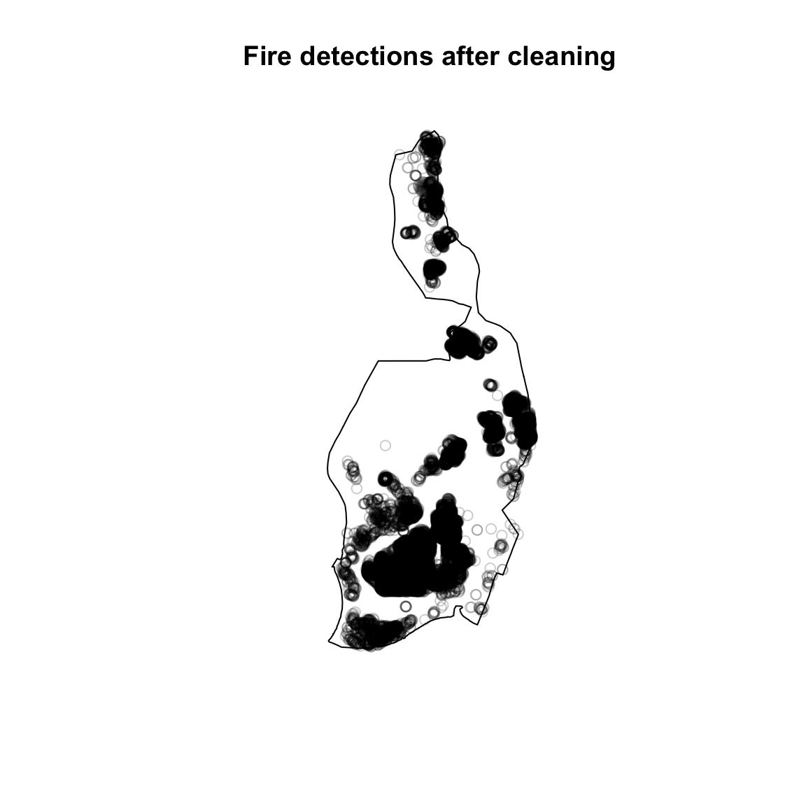
# 16k+ points make the Monte Carlo envelopes very slow, so the second-order
# tests below run on a reproducible random subsample. This is a standard way
# to keep CSR testing tractable; it does not change the underlying pattern.
set.seed(1234)
fire_sub <- fire_ppp.km[sample(fire_ppp.km$n, 3000)]
fire_subPlanar point pattern: 3000 points
window: polygonal boundary
enclosing rectangle: [786.3871, 870.7875] x [9616.111, 9829.378] km6 First-order analysis: where is the intensity?
6.1 A first check with quadrats
Before smoothing anything, a quadrat count gives a quick sense of whether intensity is even across the regency.
qt <- quadrat.test(fire_ppp.km, nx = 6, ny = 6)
qt
Chi-squared test of CSR using quadrat counts
data: fire_ppp.km
X2 = 16679, df = 29, p-value < 2.2e-16
alternative hypothesis: two.sided
Quadrats: 30 tiles (irregular windows)plot(fire_ppp.km, pch = ".", main = "Quadrat counts")
plot(qt, add = TRUE, cex = 0.7)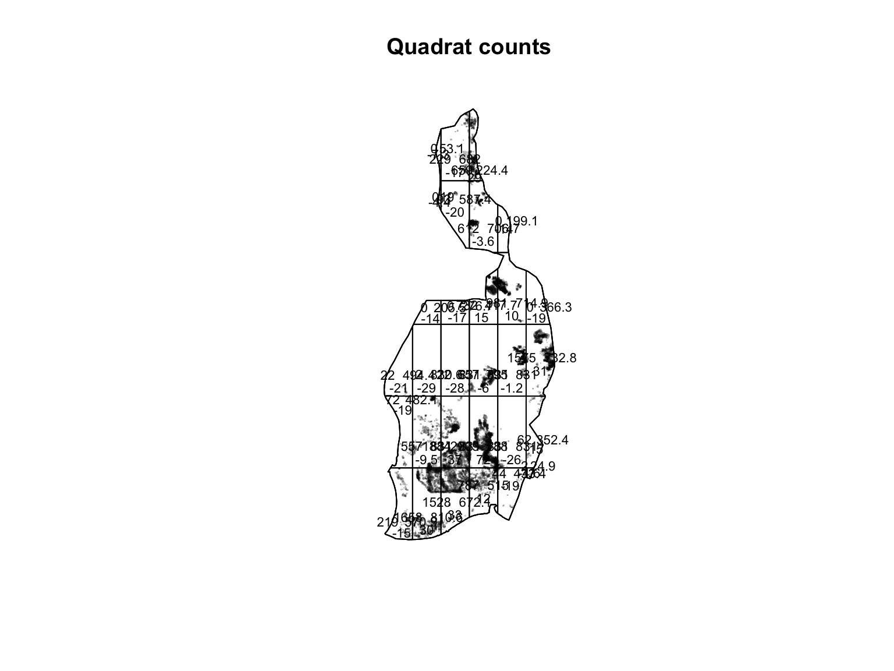
The quadrat test rejects a uniform intensity (p < 0.001): detections are far from evenly spread across the regency. This is evidence of first-order heterogeneity only — it shows intensity varies in space, not that points cluster, which the second-order tests address separately. The result also depends on the chosen quadrat size.
6.2 Kernel density with different bandwidths
The density surface depends on the bandwidth, so rather than commit to one I show two data-driven choices and one fixed value side by side.
kde_diggle <- density(fire_ppp.km, sigma = bw.diggle, edge = TRUE, kernel = "gaussian")
kde_ppl <- density(fire_ppp.km, sigma = bw.ppl, edge = TRUE, kernel = "gaussian")
kde_fixed <- density(fire_ppp.km, sigma = 2, edge = TRUE, kernel = "gaussian")
par(mfrow = c(1, 3))
plot(kde_diggle, main = "bw.diggle")
plot(kde_ppl, main = "bw.ppl")
plot(kde_fixed, main = "fixed 2 km")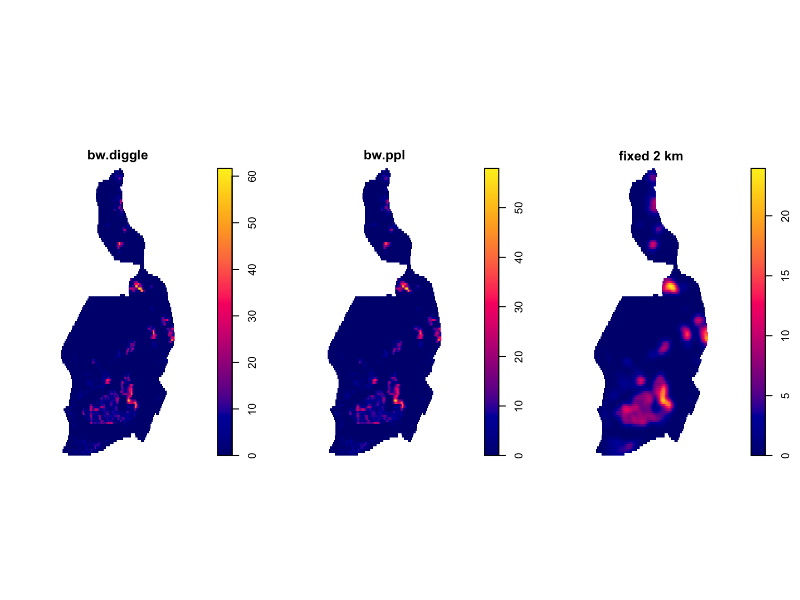
par(mfrow = c(1, 1))6.3 An adaptive estimate
kde_adaptive <- adaptive.density(fire_ppp.km, method = "kernel")
plot(kde_adaptive, main = "Adaptive KDE")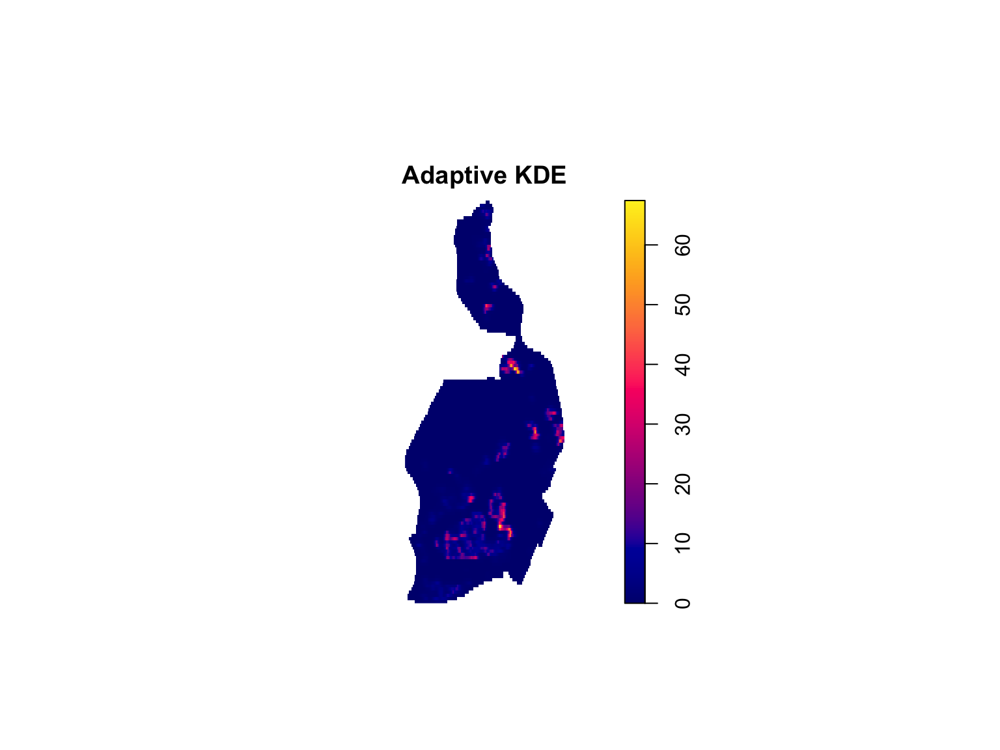
6.4 A cleaner density map
kde_rast <- raster(kde_ppl)
crs(kde_rast) <- "EPSG:32749"
tmap_mode("plot")
tm_shape(kde_rast) +
tm_raster(palette = "YlOrRd", title = "Intensity (per km²)") +
tm_shape(study_area) + tm_borders(col = "grey30") +
tm_layout(main.title = "Fire-detection intensity", legend.outside = TRUE)
The density surface shows fire detections are strongly concentrated in the central and southern parts of the regency, with very little activity in the north. The same core hotspot appears under all three bandwidths (bw.diggle, bw.ppl and the fixed 2 km kernel), so the location of the peak is robust to the smoothing choice, even if the smaller bandwidths show more local detail. This southern concentration is consistent with the low-lying peatland that dominates that part of Pulang Pisau and is highly fire-prone in the dry season. The map shows where intensity is highest but not why; it reflects where detections occur, which is shaped by both fire activity and the satellite’s ability to observe it.
7 Second-order analysis: do the fires interact?
The tests below all ask a version of the same question — are detections closer together than random? — but they look at it from different angles, so I run several and read them together.
7.1 Nearest-neighbour distances (G-function)
G_env <- envelope(fire_sub, Gest, nsim = 19, correction = "border")Generating 19 simulated realisations of CSR ...
1, 2, 3, 4, 5, 6, 7, 8, 9, 10, 11, 12, 13, 14, 15, 16, 17, 18,
19.
Done.plot(G_env, main = "G-function against a random baseline")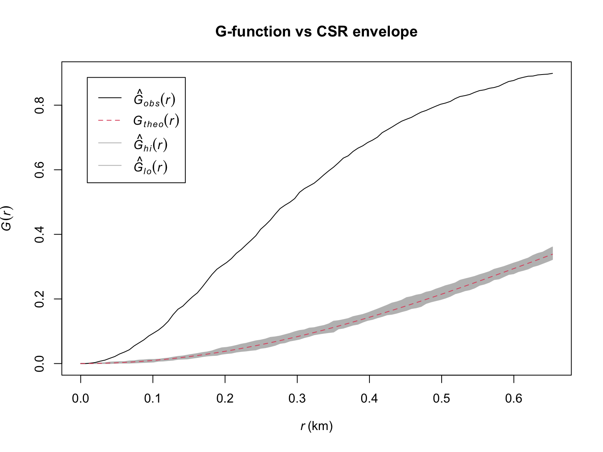
7.2 Empty-space distances (F-function)
F_env <- envelope(fire_sub, Fest, nsim = 19, correction = "border")Generating 19 simulated realisations of CSR ...
1, 2, 3, 4, 5, 6, 7, 8, 9, 10, 11, 12, 13, 14, 15, 16, 17, 18,
19.
Done.plot(F_env, main = "F-function against a random baseline")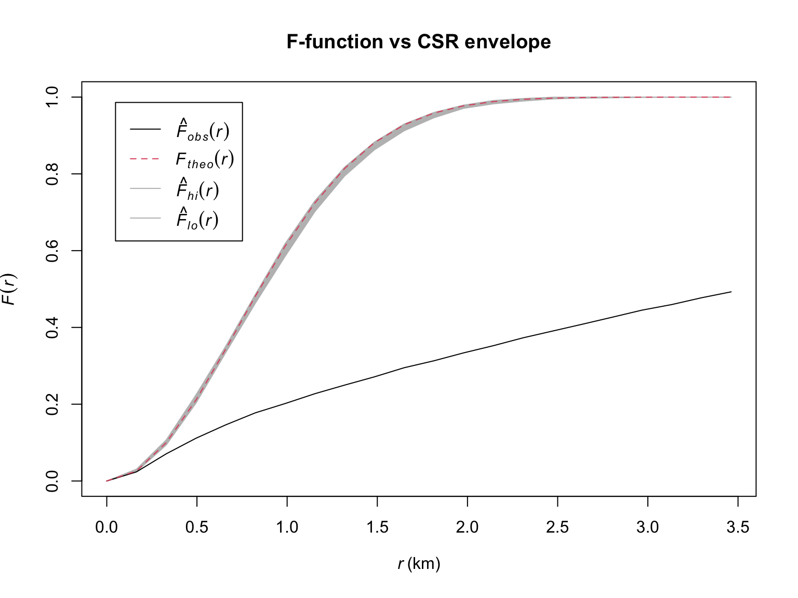
7.3 Clustering across scales (L-function)
The L-function is the most informative of the four because it shows clustering as a function of distance. I plot it centred, so the random baseline is the horizontal line and departures above it mean clustering.
L_env <- envelope(fire_sub, Lest, nsim = 19, correction = "Ripley", global = FALSE)Generating 19 simulated realisations of CSR ...
1, 2, [6:46 remaining] 3,
[5:49 remaining] 4, [5:32 remaining] 5, [5:06 remaining] 6,
[4:46 remaining] 7, [4:29 remaining] 8, [4:09 remaining] 9,
[3:56 remaining] 10, [3:35 remaining] 11, [3:10 remaining] 12,
[2:44 remaining] 13, [2:20 remaining] 14, [1:57 remaining] 15,
[1:33 remaining] 16, [1:10 remaining] 17, [47 sec remaining] 18,
[23 sec remaining]
19.
Done.plot(L_env, . - r ~ r, main = "L-function (centred)")
abline(h = 0, lty = 2)
Across the distances examined, the observed L-curve lies far above the simulation envelope, reaching values of 6–7 while the envelope stays close to zero. The detections are therefore significantly more clustered than a random (CSR) pattern at every scale up to about 20 km. The clustering rises steeply at short distances and remains outside the envelope throughout, the expected signature of fires concentrated in a few active areas rather than scattered independently.
7.4 Does the clustering survive once intensity is allowed to vary?
This is the important cross-check. The test above assumes intensity is constant, which it isn’t, so some of the “clustering” it reports may just be the hotspots. Here I let intensity vary and ask whether clustering remains on top of that.
lambda_sub <- density(fire_sub, sigma = bw.ppl, edge = TRUE)
Linhom_env <- envelope(fire_sub, Linhom,
sigma = bw.ppl,
nsim = 19,
correction = "Ripley")Generating 19 simulated realisations of CSR ...
1, 2, [6:21 remaining] 3,
[6:06 remaining] 4, [5:43 remaining] 5, [5:24 remaining] 6,
[4:56 remaining] 7, [4:33 remaining] 8, [4:10 remaining] 9,
[3:46 remaining] 10, [3:23 remaining] 11, [3:01 remaining] 12,
[2:39 remaining] 13, [2:17 remaining] 14, [1:53 remaining] 15,
[1:31 remaining] 16, [1:09 remaining] 17, [46 sec remaining] 18,
[23 sec remaining]
19.
Done.plot(Linhom_env, . - r ~ r, main = "Inhomogeneous L-function")
abline(h = 0, lty = 2)
When intensity is allowed to vary, the observed curve drops back close to the baseline for most distances, sitting near or inside the envelope rather than far above it. This is the key result: once the hotspots are accounted for, little extra clustering remains, so the strong clustering seen in the homogeneous L is largely explained by first-order heterogeneity (the uneven intensity) rather than by additional interaction between fires. The sharp rise at the largest distance is a boundary/edge effect and should not be over-interpreted.
8 Value-added: does the hotspot move over the season?
This last piece goes beyond the core methods. Instead of one density surface for the whole period, I estimate a spatio-temporal density so I can see whether the busy areas shift from month to month.
# continuous time in DAYS (not month buckets), so sparr can smooth over time
fire_st <- fire_dedup %>%
mutate(tval = as.numeric(acq_date - min(acq_date)))
st_ppp <- ppp(x = st_coordinates(fire_st)[, 1],
y = st_coordinates(fire_st)[, 2],
window = fire_owin,
marks = fire_st$tval)
st_ppp <- unmark(st_ppp) %>% # drop marks
`marks<-`(value = fire_st$tval) # re-attach clean numeric time
# give an explicit temporal bandwidth (~30 days) instead of auto-selection
stkde <- spattemp.density(st_ppp, tres = 30)
plot(stkde)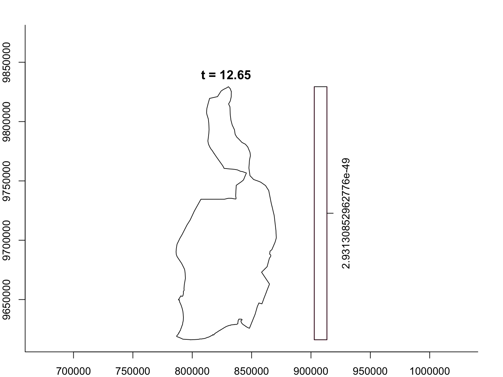
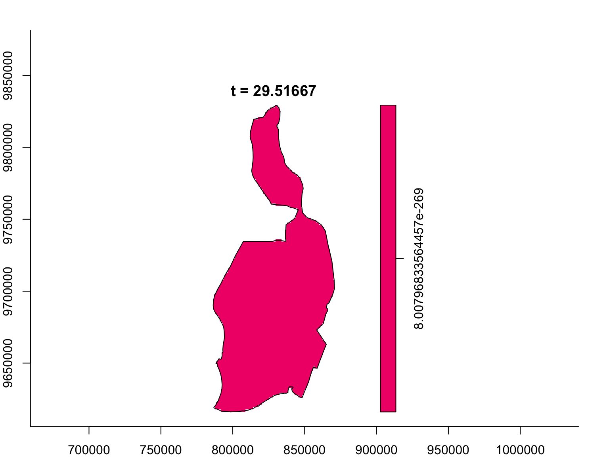
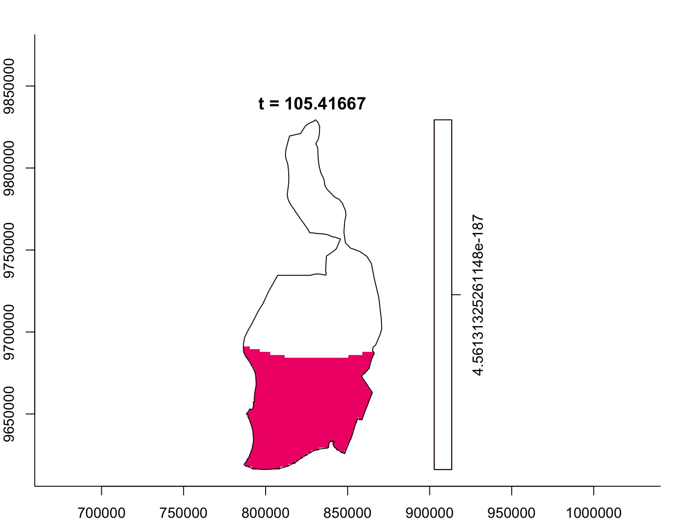
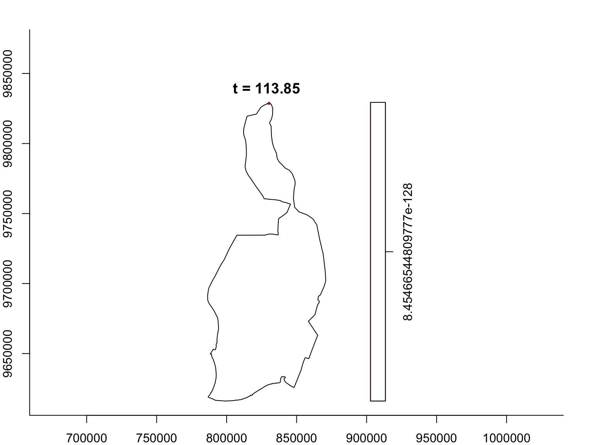
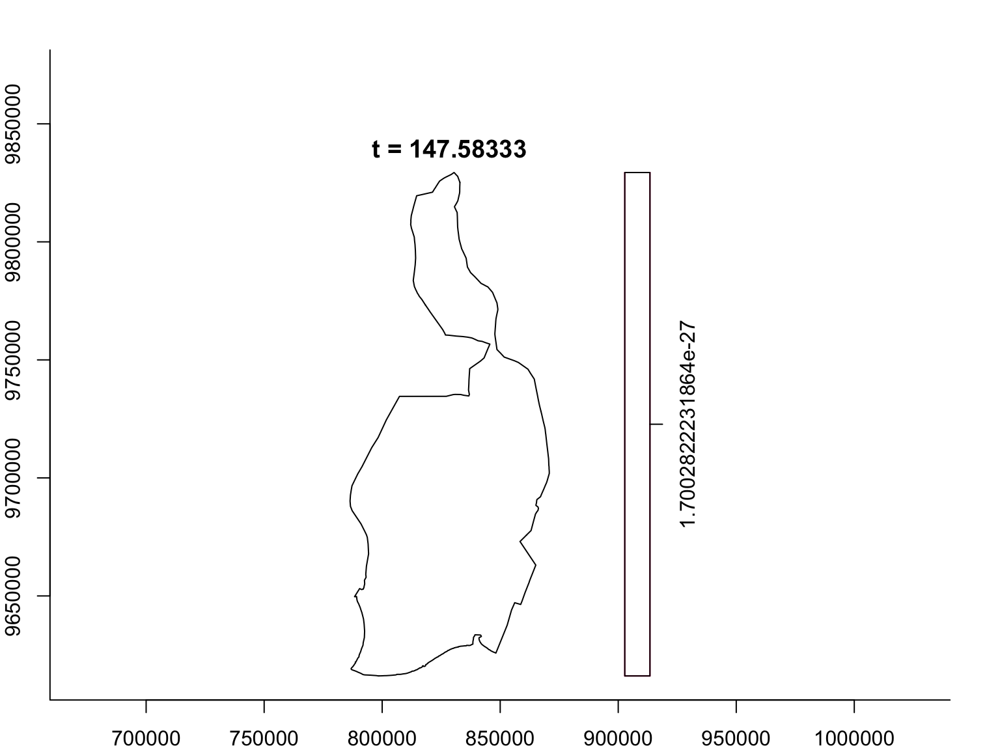
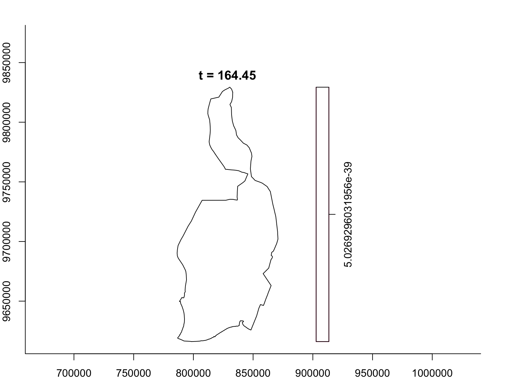
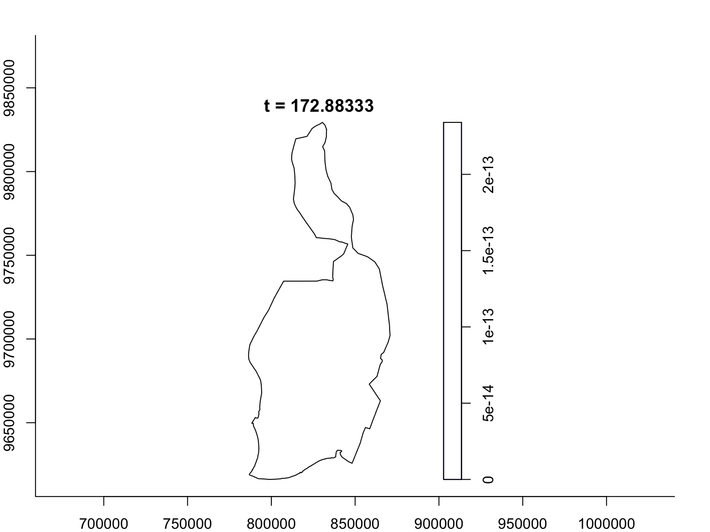
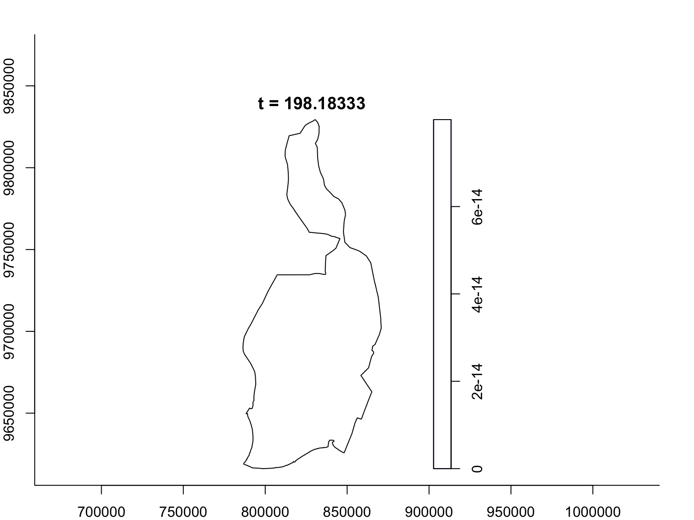
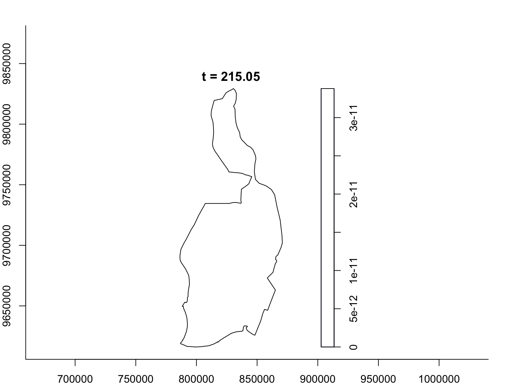
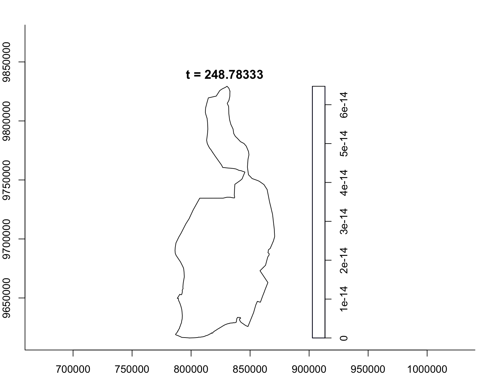
The spatio-temporal density adds a temporal dimension to the static map. Fire activity is not spread evenly through the period: detections are sparse in the early, wetter months and rise as the dry season advances toward the later part of the window. The high-intensity area stays broadly in the central-south peatland rather than migrating far. This matters for planning: the same core is at risk throughout, but the risk window is concentrated in the dry-season months, so timing — not just location — should guide when resources are made ready. (The single-slice STKDE output shown here is indicative; a full temporal animation would show the build-up more clearly.)
9 Bringing the two halves together
The two analyses point the same way. The first-order analysis shows intensity is highly uneven, concentrated in the central-south peatland. The homogeneous L confirms the detections are far more clustered than random, but the inhomogeneous L shows that this clustering mainly reflects that uneven intensity rather than independent interaction between fires — fires are concentrated because the conditions for fire are concentrated. The spatio-temporal view adds that this concentration also peaks in time, during the dry season. Alternative explanations remain: repeated detections of the same fire, cloud cover and overpass timing, and the fact that detection intensity is not the same as risk to people or assets.
10 Implications for public-safety planning
The analysis supports a targeted rather than uniform approach to fire management in Pulang Pisau. Because detections concentrate in the central and southern peatland, monitoring, patrols and early-response resources can be prioritised there rather than spread evenly. Because activity peaks in the dry-season months, readiness can be scaled up ahead of that window and down afterwards, making better use of limited resources. The persistence of the hotspot in the same peatland also points to it as the priority for longer-term measures such as maintaining water levels and canal blocking, which reduce peat flammability.
Two limits matter. The analysis shows where and when detections concentrate, not why any fire started. And a concentration of detections is not the same as risk to people: translating these patterns into risk would need data on population, settlements and land use around the hotspot. The findings are best used to focus attention and resources, not to draw causal conclusions.
11 Limitations
A few things should temper how far these results are pushed. Detections are not fires, and even after de-duplication some repeated counting may remain. Cloud cover and the timing of overpasses leave gaps in what the satellite could see, so absence in the record is not the same as absence of fire. A concentration of detections is not by itself a measure of risk without knowing who and what is exposed. And the observation window stops partway through the year, so the tail of the dry season is missing. The KDE and CSR assumptions hold only partly, which is why the results are read against more than one baseline.
12 References
- R Core Team (2026). R: A Language and Environment for Statistical Computing.
- Baddeley, A., Rubak, E., & Turner, R. (2015). Spatial Point Patterns: Methodology and Applications with R. CRC Press.
- Davies, T.M., Marshall, J.C., & Hazelton, M.L. (2018). sparr: Spatial and Spatiotemporal Relative Risk. R package.
- NASA FIRMS (VIIRS 375 m active-fire product); GADM v4.1.
- Baddeley, A., Rubak, E., & Turner, R. (2015). Spatial Point Patterns: Methodology and Applications with R. CRC Press.
- Kam, T.S. R for Geospatial Data Science and Analysis.
- NASA FIRMS (VIIRS 375 m active fire product); GADM v4.1.